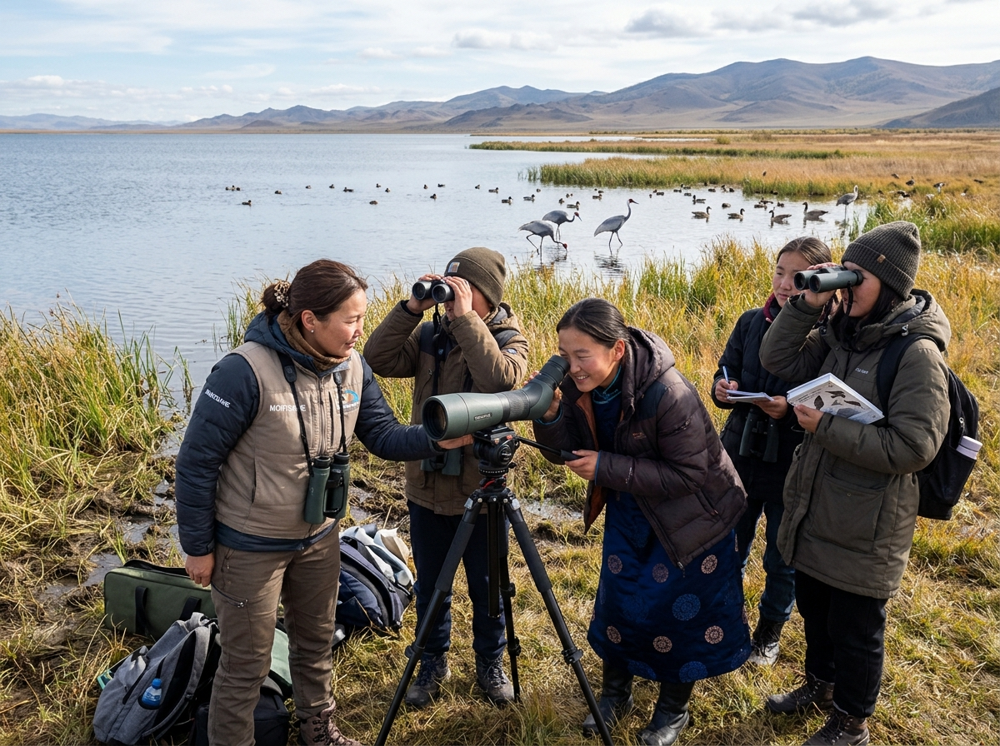
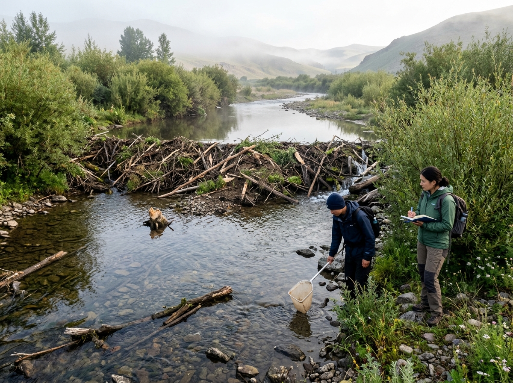
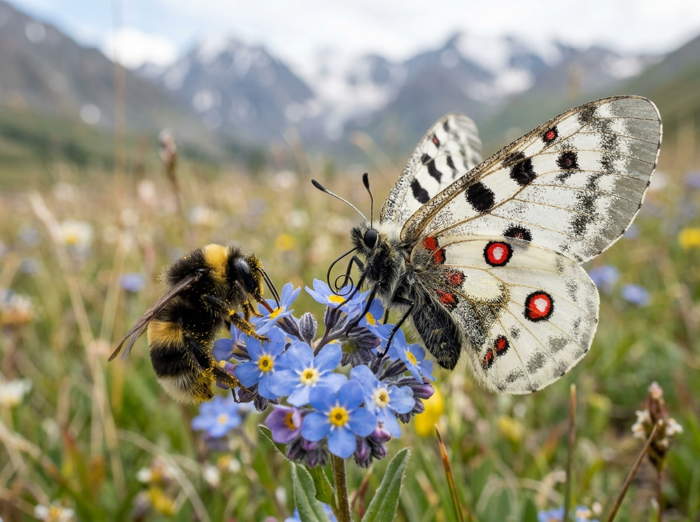

Bogd Khan Mountain • Biodiversity
BOGD KHAN MOUNTAIN • BIODIVERSITY
Learning to Read a Forest Through Birds
Bird observation opens a window into the wider forest ecosystem. Participants learn to use binoculars, spotting scopes and field guides while exploring how birds live within their habitats.
With expert guidance, observation becomes more than identification — it becomes a way to understand biodiversity, ecological relationships and why habitats matter.
HWK Evidence: HWK’s existing forest bird programme combines field observation, bird identification, equipment skills and forest-ecosystem learning at Bogd Khan Mountain.
Field observation → scientific curiosity → biodiversity awareness
 Khun Lake • Tuul River • Wetland Learning
Khun Lake • Tuul River • Wetland Learning
KHUN LAKE • TUUL RIVER • WETLAND LEARNING
Follow the Birds. Discover the Wetland.
A wetland is more than water. At Khun Lake and along the Tuul River, participants can explore waterbirds, aquatic life and the habitat relationships that connect water, land and biodiversity.
Observation with binoculars and field guides can be combined with learning about wetland ecosystems and aquatic invertebrates.
HWK Evidence: HWK’s waterbird field activities connect Khun Lake, Songino Bay and the Tuul River with wetland learning, waterbird observation and basic aquatic-invertebrate learning.
See the habitat → understand the connections → care about the system

Water • Wetlands • Ecosystem Connections
WATER • WETLANDS • ECOSYSTEM CONNECTIONS
One Species Can Reveal an Entire River System
Beaver ecology provides a practical way to explore how water, vegetation, wetlands and biodiversity interact.
By learning how beavers build dams and channels and alter local habitat conditions, participants can begin to see a river not as an isolated waterway, but as a connected ecological system.
HWK Evidence: HWK uses Eurasian beaver ecology, the Tuul River ecosystem, water pollution and freshwater biodiversity as field-learning themes.
Species → habitat → water → biodiversity → stewardship

Insects • Macro Photography • Biodiversity
INSECTS • MACRO PHOTOGRAPHY • BIODIVERSITY
See Closer. Learn Deeper.
Some of the most powerful biodiversity lessons begin with organisms small enough to overlook.
Macro photography encourages participants to slow down, observe structure and behaviour, compare what they see and turn close observation into questions about adaptation, pollination, food webs and ecosystem roles.
Learning Sequence: Observe → Photograph → Identify → Share
When biodiversity becomes visible, it becomes easier to understand and value.